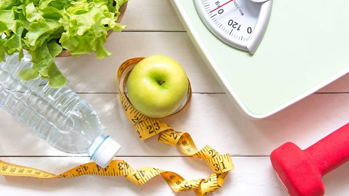

What is Weight Loss & Weight Management?
Weight loss and weight management involve making healthy lifestyle changes to achieve and maintain a desired body weight. These changes typically include improvements to diet, physical activity, and overall mental well-being. Successful weight management is not about quick fixes, but about sustainable changes that promote long-term health.
- Balanced Diet: Focusing on a nutritious diet that supports overall health and aids weight loss without extreme restrictions.
- Regular Exercise: Incorporating physical activity, whether through cardio, strength training, or flexibility exercises, to burn calories and improve fitness.
- Mental Well-Being: Developing a positive relationship with food, managing stress, and practicing mindfulness to avoid emotional eating.
- Sustainable Goals: Setting realistic, measurable goals that focus on gradual weight loss, rather than rapid, unhealthy results.
The Journey to Healthy Weight Management
Embarking on a weight loss or weight management journey can be a life-changing process. It's not just about shedding pounds, but creating lasting habits that improve overall quality of life. Whether you're aiming to lose 5kg or 50kg, the right plan tailored to your unique needs is essential for success.
- Personalized Plans: Everyone's body is different, and a personalized approach ensures your diet and exercise plan meets your needs, preferences, and health conditions.
- Sustainability: Achieving long-term weight loss involves making small, gradual changes that fit into your lifestyle, avoiding drastic diets that can be difficult to maintain.
- Support & Accountability: Having a support system, whether through a professional, friends, or family, can increase motivation and provide encouragement during difficult moments.
Why Choose Healthy Weight Management?
Focusing on healthy weight management allows you to build a lifestyle that balances both your physical and mental well-being. Unlike crash diets or temporary fixes, this approach encourages habits that can last a lifetime, improving both your health and your outlook on life.
If you're ready to start your journey towards a healthier, more sustainable lifestyle, we're here to guide you every step of the way. Together, we can achieve your goals in a way that works for you.